Le camp de basede la Lozère.
À Mende, au bord du Lot : 100 emplacements ombragés, 18 mobil-homes et une piscine chauffée. Frédéric et Nadia vous accueillent, les gorges du Tarn commencent juste à côté.
- Emplacement dès 19,60 € la nuit pour 2
- Mobil-home dès 320 € la semaine
- Piscine chauffée en juillet et août
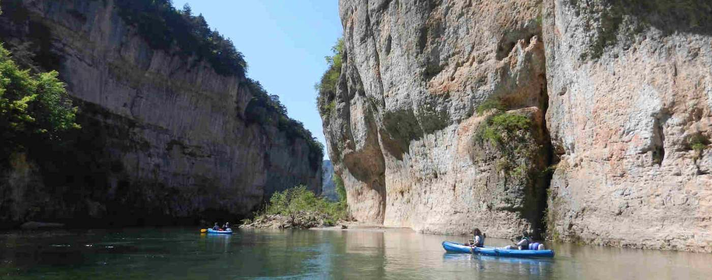
Cinq pays autour de votre tente
Le Tivoli est au centre de la Lozère, entre Aubrac, Margeride, Causses, gorges du Tarn et Cévennes. Choisissez une direction : la boussole vous montre ce qui vous attend.
Mende · au centre, le Tivoli
De l'ombre, de la place, de l'eau chaude
Cent emplacements délimités, des allées éclairées, un bloc sanitaire chauffé l'hiver et une piscine chauffée l'été. Le centre commercial est à un kilomètre, le Lot au bout du terrain.
- Piscine chauffée en juillet et août, ouverte du 1er juin au 31 août
- Wi-Fi gratuit et illimité à l'accueil, sur la terrasse et près des sanitaires
- Camping accessible aux personnes à mobilité réduite (hors locatifs et piscine)
Six mobil-homes, posez juste vos valises
Dix-huit mobil-homes pour 4 personnes, du Pluton 2000 au Trigano II 2018 avec pergola. Couettes et oreillers fournis, vaisselle complète, salon de jardin.
À 700 m d'altitude, les nuits restent fraîches
Même en juillet et en août, les nuits sont fraîches ici. Prévoyez un duvet chaud : après une journée dans les gorges, vous dormirez comme rarement.
Préparer ses journées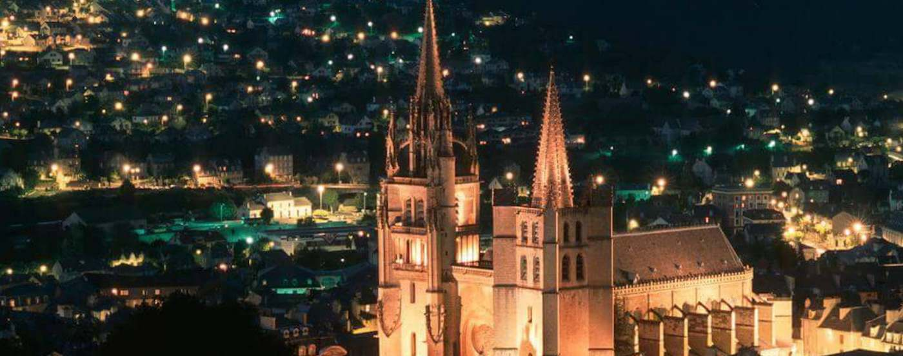
Les soirs d'été, on se retrouve
De mi-juillet à mi-août, Guillaume anime une soirée par semaine, de 21 h à 23 h : gratuit, pour petits et grands, sans troubler la tranquillité de personne. Le mercredi, le food-truck Le Cabanon s'installe au camping.
Voir le programme de l'été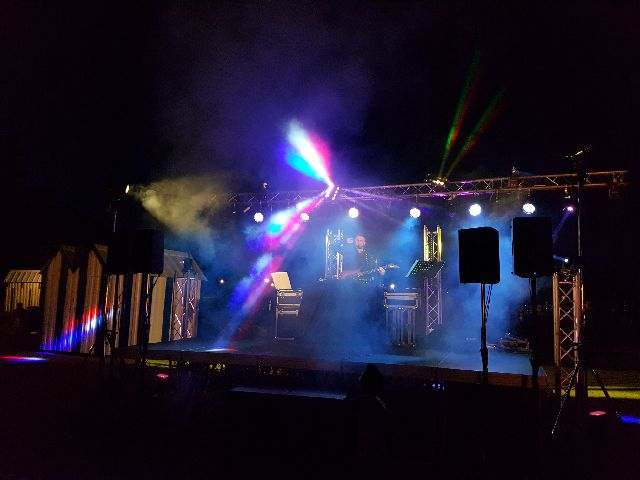
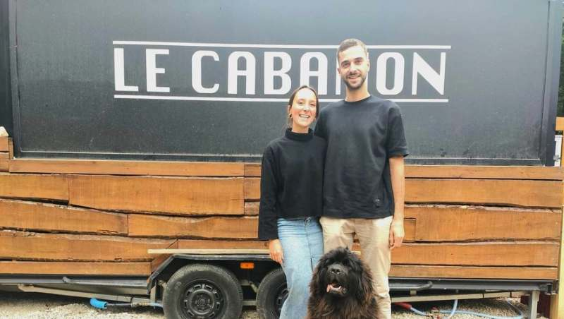
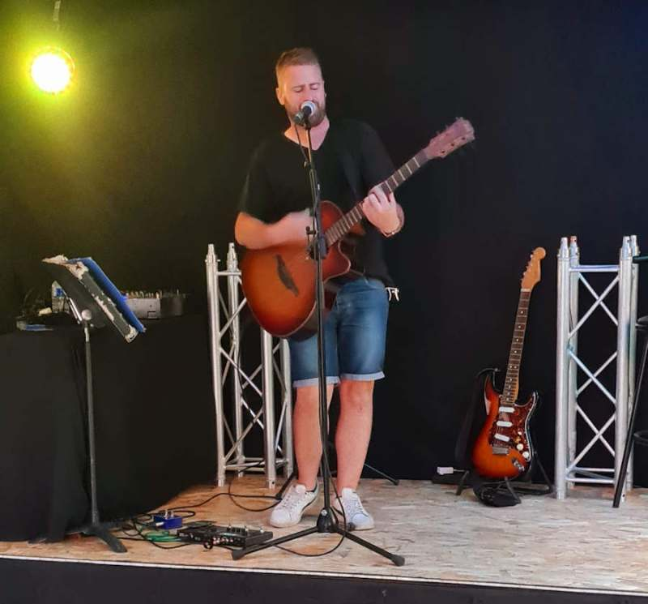
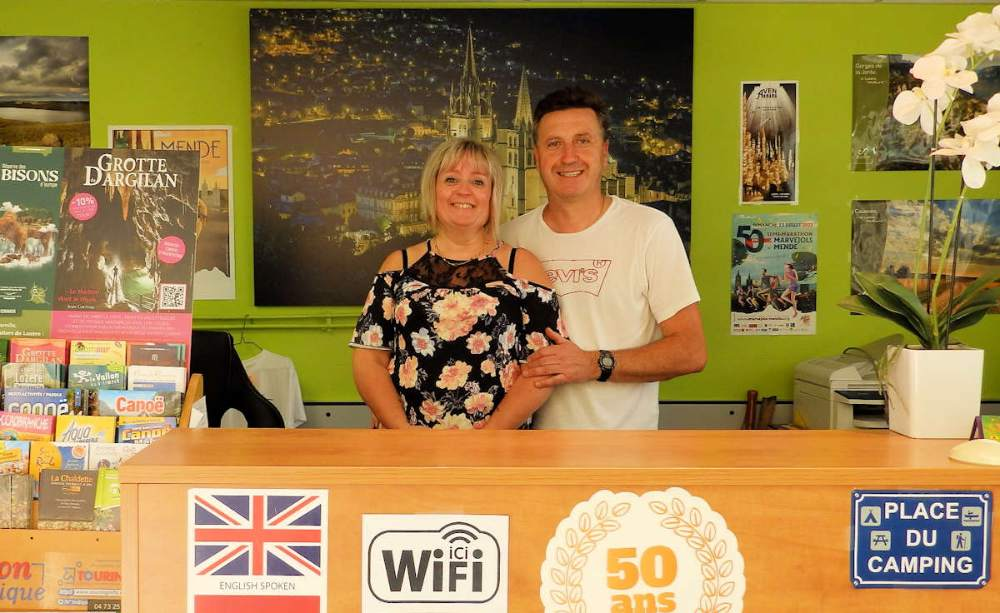
Frédéric et Nadia, à l'accueil
« Vous aurez plaisir à venir en famille chez nous. »
Ici, tout est prévu pour respecter les envies de chacun : la piscine pour les uns, les sentiers pour les autres, et le calme pour tout le monde. Une question avant de venir ? Appelez-les.
Facile à trouver
Sur l'axe Paris–Méditerranée par l'A75, et Lyon–Toulouse par la RN 88. Le camping est à Mende, impasse de Tivoli, en bordure du Lot.
GPS : 44.51880049, 3.4985238
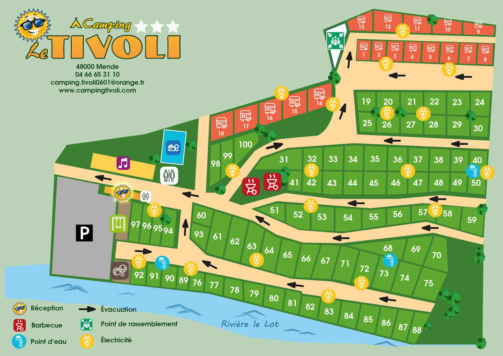
Accueil / Le camping
Le camping et les services sur place
En bordure du Lot, à l'entrée des gorges du Tarn, au centre du département de la Lozère.
Ce qui vous facilite la vie
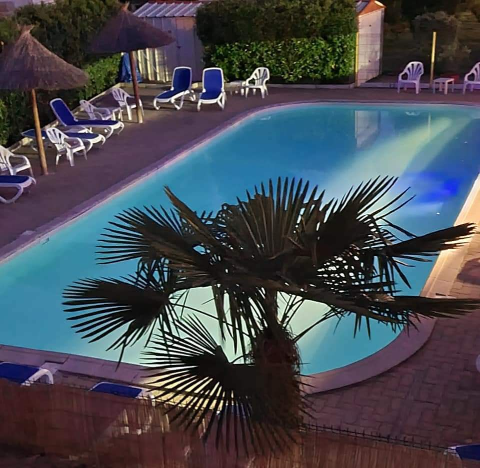
Piscine chauffée
Chauffée uniquement en juillet et août. Ouverte du 1er juin au 31 août, de 10 h à 19 h. Pour les messieurs, slip de bain obligatoire.
Le bloc sanitaire
19 éviers eau chaude et froide (dont 1 pour personnes handicapées), 12 WC, 9 douches, 1 douche avec lavabo et WC adaptés, 13 lavabos et 7 cabines individuelles. Chauffé l'hiver.
En images
Accueil / Emplacements
Tente, caravane ou camping-car
Des emplacements spacieux et délimités, à l'ombre, avec ou sans électricité (6 A). Ouvert du 1er avril au 15 octobre.
Estimer votre séjour
Choisissez votre formule : le total se calcule avec les tarifs 2026 du camping.
Tarifs emplacements 2026
Prix en euros, par jour.
Frais de réservation : 10 €. Basse saison : du 01/04 au 30/06 et du 01/09 au 15/10. Haute saison : du 01/07 au 31/08.
Accueil / Mobil-homes
Nos mobil-homes
Six modèles entièrement équipés pour 4 personnes. Draps, serviettes et produits d'entretien ne sont pas fournis ; couettes et oreillers, si.
Bon à savoir
Un conseil
Le camping est à 700 m d'altitude : même en juillet et en août, les nuits sont fraîches. Prévoyez des duvets chauds.
Comparer les prix semaine par semaineAccueil / Mobil-homes /
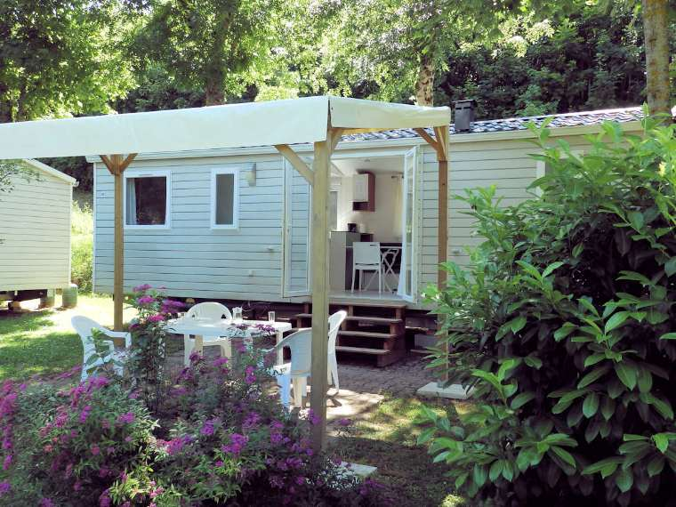
À partir de
la semaine, taxe de séjour incluse
Draps, serviettes et produits d'entretien non fournis. Couettes et oreillers fournis. Animaux non admis dans les locations.
Voir l'inventaire complet
Prix à la semaine, saison 2026
Accueil / Tarifs
Tarifs 2026
Mobil-homes à la semaine, emplacements à la nuit. Les tarifs 2027 arrivent bientôt : ceux de 2026 vous donnent un repère. Touchez une période pour la surligner.
Mobil-homes, prix TTC par semaine
Capacité maximale : 4 personnes. Taxe de séjour incluse.
Tarifs emplacements 2026
Prix en euros, par jour.
Frais de réservation : 10 €. Basse saison : du 01/04 au 30/06 et du 01/09 au 15/10. Haute saison : du 01/07 au 31/08.
Accueil / La Lozère
À découvrir en Lozère
Tourisme vert dans la vallée du Lot, entre Aubrac, Margeride, Causses, gorges du Tarn et Cévennes.
Nos idées de sorties
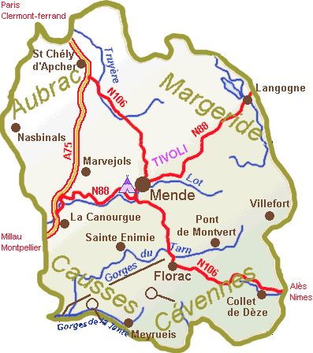
La soirée de Guillaume
Une fois par semaine, de mi-juillet à mi-août, de 21 h à 23 h. Pour petits et grands, gratuit, et sans nuire à la tranquillité de chacun.
Food-truck Le Cabanon
Tous les mercredis, de mi-juillet à fin août.
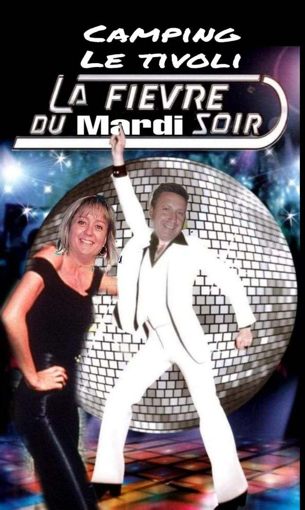
1. En ligne, tout de suite
Choisissez vos dates et réglez l'acompte par carte bancaire, sur le module sécurisé du camping.
2. Par contrat
Imprimez le contrat, remplissez-le et renvoyez-le avec votre acompte (chèque bancaire ou chèques-vacances).
Conditions de réservation
Attention : une réservation ne permet en aucun cas d'arriver en dehors des horaires d'ouverture de l'accueil. Arrivées de 14 h à 18 h, toute la saison.
Horaires de l'accueil hors saison
10 h – 12 h et 14 h – 18 h. Fermeture du camping le 15 octobre au matin.
Accueil / Offres spéciales
Offres spéciales
Vous venez pour une manifestation sportive ? Le mobil-home se loue à la nuit.
Le mobil-home à 90 € la nuit, pour 4 personnes au maximum
Plus 15 € de frais de réservation.
Hors saison (mai, juin et septembre), 2 nuits minimum, pendant les manifestations sportives : Trèfle Lozérien, rallye automobile, courses cyclistes, tournois de pétanque.
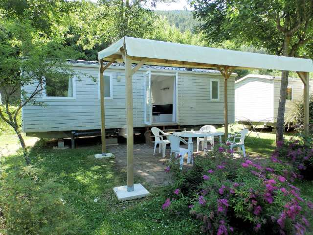
Accueil / Le plan du camping
Le plan du camping
Accueil / Accès
Accès
Facile à trouver
Sur l'axe Paris–Méditerranée par l'A75, et Lyon–Toulouse par la RN 88. Le camping est à Mende, impasse de Tivoli, en bordure du Lot.
Latitude : 44.51880049 · Longitude : 3.4985238
ItinéraireCamping Le Tivoli ★★★
Impasse de Tivoli
F-48000 Mende
04 66 65 31 10
camping.tivoli0601@orange.fr
10 h – 12 h et 14 h – 18 h. Fermeture du camping le 15 octobre au matin.
Mentions légales
Édition du site
Camping Le Tivoli
M. Frédéric Maurin
48000 Mende
Tél. 04 66 65 31 10
camping.tivoli0601@orange.fr
Hébergement
OVH
140 quai Sartel, 59000 Roubaix
Tél. 0 899 701 761
Gestion des cookies
Quand vous naviguez sur ce site, des cookies peuvent être déposés sur votre appareil.
Vous pouvez accepter ou refuser les cookies dans les réglages de votre navigateur (Chrome, Firefox, Safari, Edge). Plus d'informations sur le site de la CNIL : cnil.fr.